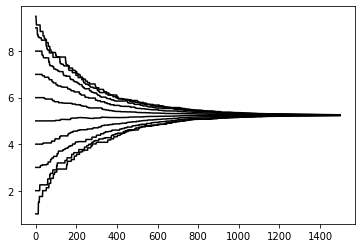
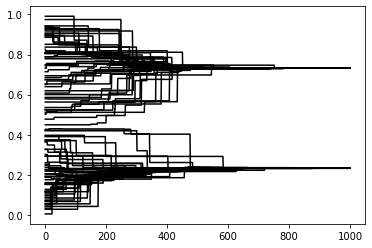
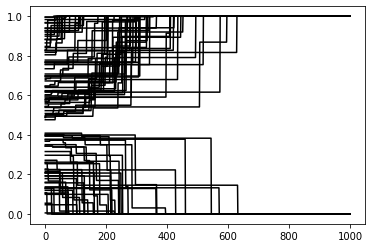

Lösungen Kapitel 5¶
Aufgabenteil 1¶
1.1¶
def length(sequence):
"""Gibt Länge eines sequentiellen Datentyps zurück."""
# Zählvariable
length = 0
# für jedes Element in Sequenz (z.B. Liste)
for element in sequence:
# Zählvariable um 1 erhöhen
length += 1
# Zählvariable ausgeben
return length
test_list = [4,23,[1,2,], "hallo"]
list_length = length(test_list)
print(list_length)
4
1.2¶
def change(price, paid):
"""Berechnet Wechselgeld und gibt den Wert zurück."""
# Differenz berechnen und ausgeben
return paid - price
my_change = change(99, 100)
print(my_change)
1
1.3¶
def coins(cents):
"""
Übersetzt einen eingegeben Betrag an Cents in die gleichwertige Anzahl an 5-, 2- und 1-Cent-Münzen.
Die Gesamtanzahl an Münzen wird dabei minimiert.
"""
# zählt, wie viele Cents bereits in Cent-Münzen "übersetzt" wurden
counter = 0
# zählen die Anzahl der jeweils benötigten Münzen
cent5_counter = 0
cent2_counter = 0
cent1_counter = 0
# For-Loop, der mindestens so lange läuft, wie Cents eingegeben wurden
# Hier hätte man eigentlich am
for i in range(cents):
# Wie viele Cents noch in Münzen übersetzt werden müssen
difference = cents - counter
# Wenn noch 5 oder mehr Cents in Münzen übersetzt werden müssen
if difference >= 5:
# Anzahl der 5-Cent-Münzen um 1 erhöhen
cent5_counter += 1
# Anzahl der schon in Münzen übersetzte Cents um 5 erhöhen
counter += 5
# Wenn noch 2 oder mehr (bzw. 2 bis 4) Cents in Münzen übersetzt werden müssen
elif difference >= 2:
# Anzahl der 2-Cent-Münzen um 1 erhöhen
cent2_counter += 1
# Anzahl der schon in Münzen übersetzte Cents um 2 erhöhen
counter += 2
# Wenn noch 1 Cent in Münzen übersetzt werden müssen
elif difference == 1:
# Anzahl der 1-Cent-Münzen um 1 erhöhen
cent1_counter += 1
# Anzahl der schon in Münzen übersetzte Cents um 1 erhöhen
counter += 1
# Ansonsten:
else:
# Loop abbrechen
break
# Ergebnisse "schön" darstellen und in der Konsole anzeigen
print(
"5-Cent:", cent5_counter,
"2-Cent:", cent2_counter,
"1-Cent:", cent1_counter,
)
coins(34)
5-Cent: 6 2-Cent: 2 1-Cent: 0
Aufgabenteil 2¶
Modell 1 (vorgegeben)¶
import random
from matplotlib import pyplot as plt
def get_weights_1(population, focal_position):
"""Ermittelt die Beeinflussungsgewichte nach den Regeln von Modell 1."""
# Gewichts-Liste
weights = []
# für jede Position in Population
for j in range(len(population)):
# Distanz zwischen Position des fokalen Agenten i und des Agenten j berechnen
distance = abs(j - focal_position)
# Wenn Distanz kleiner gleich 1
if distance <= 1:
# Gewicht von 1 an Gewichts-Liste hängen
weights.append(1)
# Ansonsten:
else:
# Gewicht von 0 an Gewichts-Liste hängen
weights.append(0)
# Gewichts-Liste ausgeben
return weights
def calculate_opinion_change(population, focal_position, weights):
"""Berechnet die Meinungsveränderung des fokalen Agenten i nach der Beeinflussung durch die Population."""
############################################################
# Oberhalb des Bruchstriches
############################################################
# Meinung des fokalen Agenten i ermitteln
opinion_focal_agent = population[focal_position]
# Liste für die gewichteten Meinungsunterschiede, die später aufsummiert werden
weighted_diffs = []
# Für jede Position in Population
for j in range(len(population)):
# Meinung des Agenten j ermitteln
opinion_agent_j = population[j]
# Meinungsdifferenz berechnen
difference = opinion_agent_j - opinion_focal_agent
# Meinungsdifferenz mit entsprechendem Gewicht aus Gewichts-Liste gewichten
weighted_diff = difference * weights[j]
# gewichtete Meinungsdifferenz an entsprechende Liste anhängen
weighted_diffs.append(weighted_diff)
# gewichtete Meinungsunterschiede aufsummieren
sum_of_weighted_diffs = sum(weighted_diffs)
############################################################
# Unterhalb des Bruchstriches
############################################################
# Achtung: Fehler in Formel in Original-Text
# Es muss korrekterweise die Summe der Beträge der Gewichte berechnet werden
# Liste für absolute Beträge der Gewichte
abs_weights = []
# für jedes Gewicht in weights
for w in weights:
# absoluten Betrag des Gewichts an abs_weights hängen
abs_weights.append(abs(w))
# Summe der absoluten Gewichte ermitteln
sum_of_abs_weights = sum(abs_weights)
############################################################
# Dividieren / Durchschnitt berechnen
############################################################
# Meinungsveränderung berechnen
opinion_change = sum_of_weighted_diffs / sum_of_abs_weights
# Meinungsveränderung ausgeben
return opinion_change
def run_model_1():
"""Modell mit Beeinflussung durch direkte Nachbarn. Reproduziert Modell 1 in Mäs 2015. """
#############################################################
# Initialisierung
#############################################################
# Population erstellen
population = []
for i in range(1, 11):
population.append(i)
# Liste für Sammlung der Output-Daten erstellen
opinion_history = []
for i in range(len(population)):
opinion_history.append([])
#############################################################
# Simulationsloop
#############################################################
# für 1500 Zeitschritte
for t in range(1500):
# zufälligen Index ziehen
focal_position = random.choice(list(range(len(population))))
# Gewichte ermitteln
weights = get_weights_1(population, focal_position)
# Meinungsveränderung berechnen
opinion_change = calculate_opinion_change(population, focal_position, weights)
# Meinung verändern / neue Meinung berechnen aus momentaner Meinung und Meinungsveränderung
new_opinion = population[focal_position] + opinion_change
# Alte Meinung durch neue Meinung in Population ersetzen
population[focal_position] = new_opinion
# Für jede Position in Population
for j in range(len(population)):
# An die opinion_history-Unterliste an Position j die Meinung des Agenten j hängen
opinion_history[j].append(population[j])
# Output-Daten plotten
for opinion_data in opinion_history:
plt.plot(opinion_data, color = "black")
plt.show()
run_model_1()

2.2 - Modell 2¶
def get_weights_2(population, focal_position):
"""Ermittelt die Beeinflussungsgewichte nach den Regeln von Modell 2."""
# Liste für Gewichte
weights = []
# für jeden Agenten bzw. jede Position in Population
for j in range(len(population)):
# Absoluten Meinungsunterschied (nicht Positionsunterschied wie in Modell 1) berechnen
abs_diff = abs(population[j] - population[focal_position])
# Wenn Meinungsunterschied kleinergleich Grenzwert
if abs_diff <= 0.2:
# Gewicht von 1 anhängen
weights.append(1)
# Ansonsten:
else:
# Gewicht von 0 anhängen
weights.append(0)
# Liste der Gewichte ausgeben
return weights
def run_model_2():
"""Modell mit Beeinflussung durch ähnliche Agenten. Reproduziert Modell 2 in Mäs 2015. """
#############################################################
# Initialisierung
#############################################################
# Population erstellen
population = []
for i in range(100):
agent = random.random()
population.append(agent)
# Liste für Sammlung der Output-Daten erstellen
opinion_history = []
for i in range(len(population)):
opinion_history.append([])
#############################################################
# Simulationsloop
#############################################################
# für 1000 Zeitschritte
for t in range(1000):
# zufälligen Index ziehen
focal_position = random.choice(list(range(len(population))))
# Gewichte ermitteln
weights = get_weights_2(population, focal_position)
# Meinungsveränderung berechnen
opinion_change = calculate_opinion_change(population, focal_position, weights)
# Meinung verändern / neue Meinung berechnen aus momentaner Meinung und Meinungsveränderung
new_opinion = population[focal_position] + opinion_change
# Alte Meinung durch neue Meinung in Population ersetzen
population[focal_position] = new_opinion
# Für jede Position in Population
for j in range(len(population)):
# An die opinion_history-Unterliste an Position j die Meinung des Agenten j hängen
opinion_history[j].append(population[j])
# Output-Daten plotten
for opinion_data in opinion_history:
plt.plot(opinion_data, color = "black")
plt.show()
run_model_2()

2.3 - Modell 3¶
def get_weights_3(population, focal_position):
"""Ermittelt die Beeinflussungsgewichte nach den Regeln von Modell 3."""
# Liste für Gewichte
weights = []
# für jeden Agenten bzw. jede Position in Population
for j in range(len(population)):
# absoluten Meinungsunterschied berechnen
abs_diff = abs(population[j] - population[focal_position])
"""Anmerkung zu Gewichten:
Die Gewichte werden nun auf einen kontinuierlichen Bereich zwischen -1 bis 1 skaliert.
Meinungsunterschiede von >0.5 bis 1 führen zu Gewichten von <0 bis -1.
Meinungsunterschiede von 0 bis 0.5 führen zu Gewichten von 1 bis 0,
"""
# Wenn Meinungsunterschied größer Grenzwert
if abs_diff > 0.5:
# negatives Gewicht anhängen
w = -1 * (2 * abs_diff - 1)
# ansonsten:
else:
# positives Gewicht anhängen
w = (1 - 2 * abs_diff)
# Gewicht anhängen
weights.append(w)
# Liste der Gewichte ausgeben
return weights
def run_model_3():
"""Modell mit negativer Beeinflussung. Reproduziert Modell 3 in Mäs 2015. """
#############################################################
# Initialisierung
#############################################################
# Population erstellen
population = []
for i in range(100):
agent = random.random()
population.append(agent)
# Liste für Sammlung der Output-Daten erstellen
opinion_history = []
for i in range(len(population)):
opinion_history.append([])
#############################################################
# Simulationsloop
#############################################################
# für 1000 Zeitschritte
for t in range(1000):
# zufälligen Index ziehen
focal_position = random.choice(list(range(len(population))))
# Gewichte ermitteln
weights = get_weights_3(population, focal_position)
# Meinungsveränderung berechnen
opinion_change = calculate_opinion_change(population, focal_position, weights)
# Meinung verändern / neue Meinung berechnen aus momentaner Meinung und Meinungsveränderung
new_opinion = population[focal_position] + opinion_change
# Meinung in zulässigem Bereich halten
if new_opinion < 0:
new_opinion = 0
elif new_opinion > 1:
new_opinion = 1
# Alte Meinung durch neue Meinung in Population ersetzen
population[focal_position] = new_opinion
# Für jede Position in Population
for j in range(len(population)):
# An die opinion_history-Unterliste an Position j die Meinung des Agenten j hängen
opinion_history[j].append(population[j])
# Output-Daten plotten
for opinion_data in opinion_history:
plt.plot(opinion_data, color = "black")
plt.show()
run_model_3()
